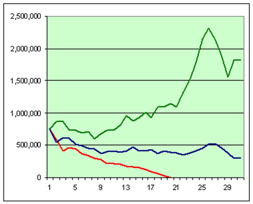

פורסם בתאריך 4.5.2019. עדכון אחרון בתאריך 5.12.2019
התכנים בפוסט זה, כמו כל שאר התכנים בבלוג, הינם תכנים לימודיים במהותם, הם אינם מהווים ייעוץ או המלצה לביצוע פעולה בנייר ערך, ואין לראות בהם תחליף לייעוץ השקעות ו/או ייעוץ פנסיוני המתחשב בצרכיו הייחודיים של כל אדם.
קופת גמל להשקעה הוא מוצר חדש יחסית שמשווק בצורה די אגרסיבית. בגדול מדובר במוצר שמהווה תחליף לחשבון השקעות פרטי (ולא לחיסכון הפנסיוני), ויש לו שני יתרונות מרכזיים מבחינת מיסוי. לאחרונה השיח ברשת ובקבוצות פייסבוק שונות בתחומי הפיננסים וההשקעות מתמקד לצערי, כמו בנושאים רבים אחרים, דווקא בשאלות הלא נכונות – כמו איזה גוף מציע את התנאים הטובים ביותר לקופת גמל להשקעה ומי משיג את התשואות הגבוהות ביותר. הנחת היסוד של אותם דיונים היא שהטבות המס של קופת גמל להשקעה הופכות אותו למוצר מוצלח, וכעת נותר רק לבחור בין הקופות השונות והמסלולים השונים. לצערי, טרם ראיתי כתבה או פוסט מקיף שבוחן את אותה הנחת יסוד, וזו בדיוק המטרה של פוסט זה. בעצם, אני לוקח כאן צעד אחורה ובוחן האם קופת גמל להשקעה הוא בכלל מוצר שכדאי להשקיע באמצעותו והאם היתרונות (לכאורה) שלו אכן מהווים יתרונות אל מול האלטרנטיבה הטבעית – חשבון השקעות פרטי "רגיל".
בבואנו לתכנן את ההשקעות שלנו באפיקים השונים, עלינו תמיד לזכור את המטרה – מקסום תשואה בהלימה למטרות וליעדים שלנו. כלומר בסופו של דבר, נרצה שיישאר לנו ביד כמה שיותר כסף בהתאם לרמת הסיכון ולטווחי זמן ההשקעה שתכננו, אחרי כל הניכויים. אפיקי ההשקעה השונים הם רק האמצעי ולא המטרה, ואין שום היגיון ב"להינעל" דווקא על אפיק מסוים.
שני היתרונות המרכזיים של קופת גמל להשקעה הם:
1. דחיית מס במעבר בין מסלולים. כאשר משנים מסלולי השקעה בעצם משנים את הרכב התיק – למשל מגדילים/מקטינים את הרכיב המנייתי ע"ח הרכיב האג"חי בתיק. כאשר מבצעים שינויים כאלה בתיק הפרטי, נדרש למכור חלק מהאחזקות ולקנות אחרות במקומן, וכאשר מוכרים ברווח משלמים מס רווחי הון. בקופת גמל להשקעה לעומת זאת, שינויי מסלול לא מהווים אירוע מס, ומשלמים מס רווחי הון רק בעת משיכת הכספים.
2. פטור מוחלט ממס רווחי הון אם מייעדים את הכספים לקצבת הפנסיה בעת הפרישה, כלומר ע"י הוספתם לחיסכון הפנסיוני, במידה ולא משכנו אותם לפני הפרישה.
עכשיו – הבה נבחן את שני היתרונות הללו אל מול חשבון השקעות פרטי.
יתרון ראשון – דחיית מס במעבר בין מסלולים
אלה שכבר קראו לפחות חלק מפוסטים שלי ו/או למדו אצלי את קורס השקעות ופנסיה ביעילות ובפשטות, או קראו במגוון מקורות מידע אחרים, כבר הבינו את היתרון הגדול בהשקעה במדדי מניות לטווח ארוך, מבלי למכור בשום שלב או לנסות לתזמן את השוק. כמובן שלא כל התיק יושקע במניות וחלקו (לכל הפחות מרכיב של כרית ביטחון) יושקע ברכיבים סולידיים כמו אג"חים קצרי טווח. כאשר משקיעים בקרנות מחקות מדד (הן קרנות מחקות מדד מניות והן קרנות מחקות מדד אג"ח), ובמיוחד בקרנות שמשקיעות מחדש את הדיבידנדים/הריביות ועושות זאת ברוטו ממס, אז כל עוד לא מוכרים לא משלמים בכלל מס רווחי הון. משקיע פאסיבי נבון שפועל בצורה הזו, יכול להשקיע במשך עשרות רבות של שנים ולהימנע לחלוטין מתשלום מס, פרט למקרים בו יממש חלק מהכסף, כך שבהיבט הזה אין כל הבדל בין חשבון השקעות פרטי לקופת גמל להשקעה. אפילו במידה ומבצעים איזונים תקופתיים בתיק בין מניות לאג"חים, ובוגרי הקורס שלי כבר יודעים שבמרבית המקרים אותם איזונים שרירותיים כלל אינם נחוצים, עדיין ניתן לבצע את האיזונים מבלי למכור (ובכך להימנע מתשלום מס רווחי הון), אלא באמצעות השקעות המשך. כלומר בהשקעות הבאות של חסכונות שנצבור, פשוט נרכוש יותר מהאפיק הדורש תוספת עד לחזרה לאיזון.
כיצד בונים תיק לפרישה
אז לגבי היתרון הראשון של קופת גמל להשקעה – הבנו שבהתנהלות פאסיבית נבונה יש כאן תיקו בין חשבון השקעות פרטי לקופת גמל להשקעה. ביתרון השני לעומת זאת, יש יתרון מוחץ דווקא לחשבון השקעות פרטי! כדי לממש את הפטור ממס על כספי קופת הגמל להשקעה, נדרש להפקידם לקצבת הפנסיה בעת הפרישה. תחילה, עלינו להבין איך פועל מנגנון חלוקת הקצבה של קרנות הפנסיה בישראל, ומדוע הוא מנגנון לא יעיל. בעצם ניתן לייצר "קצבה עצמאית" מתוך חשבון השקעות פרטי שמשמש לפרישה באופן יותר יעיל והרבה יותר רווחי מקצבת הפנסיה. לשם כך נבין איך בונים תיקים לפרישה באופן כללי, ואיך תיקי הפרישה מיושמים בקרנות הפנסיה בפרט.
בשלב זה נציין שמדדי מניות משיגים, ע"ס סטטיסטיקה של יותר מ-100 שנה, תשואה שנתית נומינלית ממוצעת של כ-10%, או תשואה ריאלית של כ-7%. אז האם זה אומר שניתן לבנות תיק לפרישה שמכיל 100% מדדי מניות, ולמשוך ממנו כ-7% בשנה עם הצמדה למדד, וככה לחיות רק מהתשואה ולשמר את הקרן ליורשים שלנו?
אם לא היתה תנודתיות בשוק ההון זה אכן היה המצב, אבל בגלל התנודתיות צריך להיות הרבה יותר שמרניים. מועד הפרישה בו מתחילים לחיות מתיק הפרישה הוא קריטי, והתמונה המצורפת (מתוך מחשבון הפרישה המצוין FireCalc) ממחישה זאת בצורה הכי טובה – 3 אנשים פרשו לגמלאות עם תיק זהה של $750,000 ומושכים ממנו בדיוק את אותו סכום, $35,000, מדי שנה. מדובר בשיעור משיכה של 4.67% לשנה מגודל התיק ההתחלתי. שלושתם בנו על לחיות מהתיק במשך 30 שנה, אבל התוצאות שלהם שונות לחלוטין: אחד יותר מהכפיל את התיק למרות המשיכות, אצל השני התיק הצטמק בחצי, ואצל השלישי התיק נמחק לחלוטין אחרי 19 שנה! מה היו מועדי הפרישה שלהם? מאוד סמוכים: 1973, 1974 ו-1975!

למה זה קורה, הרי אנחנו יודעים שהשוק תמיד עולה לטווח הארוך? אם מדובר בהשקעה שאנחנו לא תלויים בה למחייתנו, אז גם אם נכנסנו בתזמון גרוע, נוכל לספק לה את הזמן הדרוש להתאוששות ולא נממש. אבל בתיק לפרישה אנחנו צריכים למשוך מהתיק כספים למחייתנו השוטפת בכל מקרה, ומועד הפרישה מאוד קריטי. אם פרשנו בתקופה של עליות, התיק יצמח למרות המשיכות, והגידול בו ייגן בפני תקופות פחות טובות בהמשך. אבל אם פרשנו בתקופת ירידות, נצטרך למשוך על אף הירידות, ככה שמספיקות מס' שנים גרועות של ירידות בשווקים + משיכות, כדי שהתיק יצטמק עד כדי כך שהוא ייכנס למסלול בטוח לחיסול הקרן. למשל אם נמשוך מדי שנה 6% משווי התיק בעת הפרישה (וכל שנה נמשיך למשוך את אותו סכום עם הצמדה למדד), והתיק הצטמק ל-30% מגודלו המקורי, אז התיק יצטרך לצמוח ב-20% כל שנה רק כדי להניב את אותם שישה אחוזים מגודלו המקורי ולשמר את ערכו (אפילו לא נדבר על לחזור לשוויו המקורי). זה כמובן לא יקרה והתיק יחוסל לחלוטין תוך שנים ספורות.
פה נכנסו לתמונה מחקרים שבדקו מהו שיעור המשיכה הבטוח. כיוון שאנחנו לא יודעים לתזמן את השוק ולתכנן את מועד הפרישה שלנו בהתאם, צריך לבצע משיכות צנועות יותר כדי שהתיק יוכל לשרוד גם אם פרשנו בתזמון אומלל ביותר (כמו ב-1929, ב-1973 או בשנת 2000). אם שיעור המשיכה איפשר לתיק לשרוד בנקודות פרישה שונות לאורך ההיסטוריה, ובפרט בתזמונים הגרועים ביותר, סימן ששיעור המשיכה בטוח. מעבר לכך המחקרים בחנו גם מה צריך להיות הרכב התיק (בעיקר שילובים של מדדי מניות ואג"חים).
המחקר המפורסם ביותר בתחום נקרא מחקר טריניטי והוא מצא שתיק של 50%/50% מניות/אג"ח או 75%/25% מניות/אג"ח, עם שיעור משיכה של 4% צמוד למדד, ישרוד במשך 30 שנה בכ-95% מהמקרים. במרבית המקרים התיק אפילו צמח משמעותית. אגב, באופן אירוני תיק סולידי לפרישה שכולל בעיקר אג"חים, כפי שנהוג לחשוב, שורד פחות טוב מתיק מנייתי כי אין מנוע צמיחה לתיק, והמחקרים הראו שנדרש להחזיק לפחות 50% מניות בתיק. זה נכון במיוחד בתקופה האחרונה שבה תשואות האג"חים הן בשפל היסטורי.
אם מושכים לפי שיעור משיכה שגבוה מ-4% אז מקבלים "קצבה" גבוהה יותר אבל זה כמובן מגיע תוך הגדלת הסיכון לכך שהתיק ייגמר "לפני שאנחנו ניגמר" 😉. אין ארוחות חינם. במידה ורוצים להגשים מטרה שאפתנית יותר ולא להסתפק רק בשרידות התיק, אלא לכוון לכך שנחיה רק מהתשואה ונשמר את הקרן לטובת יורשינו (ואפילו נגדיל אותה), אז צריך להיות אפילו עוד יותר שמרניים ולהסתפק בשיעור משיכה של 3% ופחות, מה שמשמר את מרבית הקרן גם בתרחיש הגרוע ביותר, ובממוצע מכפיל את הקרן פי 2.5 אחרי 20 שנה.
עכשיו, אחרי שאנחנו מבינים בתיקים לפרישה ובשיעור המשיכה הבטוח, בואו נחזור למנגנון הקצבאות של קרנות הפנסיה בישראל. קצבאות הפנסיה מתוכננות במכוון כך שהחיסכון יתאפס עד תוחלת החיים הצפויה. כאשר פורשים לגמלאות אין לנו שום שליטה על מדיניות ההשקעות, ותחשיבי הקצבה של קרנות הפנסיה לוקחים בחשבון תשואה שמכונה "הריבית התחשיבית" ומוכתבת ע"י האוצר, בגובה 3.74% צמוד למדד. התיקים של הפנסיונרים סולידיים כך שזו הנחה סבירה. אז למה שהכסף יסתיים? מפני ששיעור המשיכה גבוה מהתשואה ועומד על כ-6-7% צמוד מדד (תלוי אם יש או אין בן/בת זוג, מה הגיל שלהם וכו', כי האלמן/ה ימשיכו לקבל 60% מהקצבה כל ימי חייהם). בלי להיכנס לחישובים וסימולציות, אותם אני מדגים בצורה פשוטה בקורס השקעות ופנסיה ביעילות ובפשטות, התיק מתוכנן להתאפס לפי תוחלת החיים הממוצעת, כך שהעמיתים שיחיו יותר מהממוצע ירוויחו על חשבון העמיתים שיחיו פחות מהממוצע, אבל לקרן הפנסיה עצמה זה לא כ"כ משנה.
יתרון שני – פטור ממס בהקצאה לקצבה
אז הבנו שבחיסכון הפנסיוני שיעור המשיכה גבוה משמעותית מהתשואה, ושהחיסכון מתוכנן להסתיים פחות או יותר לפי תוחלת החיים הצפויה. אם היינו מסתפקים בשיעור משיכה צנוע יותר של כ-3-4%, יכולנו לשמר את הקרן ובגדול לחיות רק מהתשואה. כך יכולנו בעתיד גם למשוך סכום חד פעמי גדול אם היינו רוצים, וגם להשאיר ירושה מכובדת מאוד. חלק מהאנשים יכלו בהחלט להסתפק בקצבת פנסיה שנגזרת משיעור משיכה של כ-3-4% במקום 6-7%, והיה עדיף להם להשקיע עצמאית את החיסכון הפנסיוני בתמהיל עם חשיפה מנייתית גבוהה, ולמשוך ממנו באופן עצמאי. לאחרים זה לא היה מספיק והם בהחלט היו זקוקים לשיעור משיכה גבוה יותר.
עכשיו, בואו נחזור לקופת גמל להשקעה. צריך לזכור שאם מייעדים את כספי קופת הגמל להשקעה עבור קצבת הפנסיה, הם מצטרפים לחיסכון הפנסיוני שיש לנו בכל מקרה! אז אפילו אם בקצבה שנקבל מתוך החיסכון הפנסיוני לא נוכל להסתפק בשיעור משיכה של כ-3-4%, עדיין מתוך החלק הנוסף של קופת הגמל להשקעה בהחלט נוכל להסתפק בשיעור משיכה צנוע, ואולי אפילו לא נזדקק למשוך ממנו כלום כי קצבת החיסכון הפנסיוני תהיה די והותר עבורנו (אם טיפלנו בה כמו שצריך בשלב החיסכון). עכשיו, הבה נבצע שתי השוואות:
השוואה ראשונה (השמות נבחרו בבדיחות הדעת ואינם מרמזים דבר):
מילטון פרידמן, פנסיונר עם חיסכון פרטי בגובה 1.2 מיליון ₪, משקיע את החיסכון במדדי מניות ומושך ממנו 3% מדי שנה. מנגד, קרל מרקס, פנסיונר עם קופת גמל להשקעה בסך 1.2 מיליון ₪ מעביר אותה לקרן הפנסיה בעת הפרישה. המשיכה של מילטון מהווה 1,200,000 * 3% = 36,000 ₪ בשנה = 3,000 ₪ בחודש (שמתקבלים כאמור מעבר לחיסכון הפנסיוני שלו). קרל, לעומתו, מקבל קצבה של בין 6,300-7,000 ₪ מקרן הפנסיה מתוך כספי קופת הגמל להשקעה (גם כאן, מעבר לחיסכון הפנסיוני), בתלות בהאם הוא נשוי ובגילה של אשתו. לצורך הדוגמא, נלך לקראתו של קרל ונניח שאינו נשוי (הוא שלח את אשתו הבורגנית לגולאג), ולכן מקבל את הרף הגבוה של הקצבה ע"ס 7,000 ₪. כדי שההשוואה תהיה הוגנת, קרל צורך למחייתו 3,000 ₪ בחודש מתוך הקצבה, בדיוק כמו מילטון, ומשקיע את 4,000 השקלים הנוספים במדדי מניות.
בעצם, מילטון שם את כל "הבוכטה הגדולה" כבר בנק' ההתחלה באפיק שמייצר תשואה גבוהה, ומושך ממנו לאט-לאט, ואילו קרל שם את "הבוכטה הגדולה" באפיק בתשואה נמוכה, ו"מטפטף" חלקים ממנו אל עבר האפיק בתשואה גבוהה. אז כמה יוכל כל אחד מהם להוריש לילדיו אחרי 20 שנה? אצל מילטון הסכום הסופי תלוי במועד הפרישה ונע בין 37% לבין 720% מהסכום ההתחלתי (ע"ס מחשבון הפרישה FireCalc). בממוצע יכפיל את ההון פי 2.5, כלומר יישאר אחרי המשיכות סכום ריאלי לירושה של כ-3 מיליון ₪. אצל קרל החישוב הוא סכום של סדרה הנדסית עם תשואות של: 1.0719 + … + 1.071 + 1 תחת הנחת תשואה ריאלית ממוצעת של 7% לשנה והשקעה שנתית של 48,000 ₪ (4,000 לחודש). התוצאה אצל קרל: 2 מיליון ₪, כלומר מילטון השיג בממוצע 50% יותר! נכון שמילטון חייב במס רווחי הון, אבל בוודאי שלא כל הסכום שמשך (720,000 ₪) מהווה רווח, הרי חלק ממנו הוא סכום ההשקעה המקורי שאינו רווח, ואינו חייב במס. מעבר לכך, ישנן כל מיני דרכים לפורשים לצמצם את חבות המס עד כדי איפוסה המוחלט בתנאים מסוימים, ע"י ניצול נק' זיכוי ממס על רווחי ההון ומכירה של מדדים שנקנו לקראת הפרישה (ולא צברו רווחים גבוהים) לפני מדדים שנקנו מזמן (והספיקו לצבור רווחים גבוהים). אבל אפילו פה, גם אם נלך על התרחיש המחמיר ביותר והלא סביר מבחינתו של מילטון, שבו כל הסכום שמשך (720,000 ₪) מהווה רווח – אז ינוכה ממנו מס רווחי הון בסך 180,000 ₪ בלבד, מתוך פער של מיליון ₪ בינו לבין קרל.
בפועל, גם על משיכות מהתיק הפרטי לאחר הפרישה נשלם מעט מאוד מס, אם בכלל. לאחר גיל 60 חבות המס נקבעת לפי מדרגות מס שולי ועד גובה מס רווחי הון, כלומר 10%, 14% 20% ורק אח"כ 25%, וכן ניתן לקזז נק' זיכוי לא מנוצלות. למשל, במצב בו שני בני זוג מקבלים קצבה בגובה 5,668 ₪ כ"א מהחיסכון הפנסיוני – הקצבה כולה תהיה פטורה ממס כי הסכום הזה הוא תקרת הפטור ממס על הקצבה למי שפורש אחרי שנת 2025. כיוון שמדרגת המס הראשונה בגובה 10% היא עד הכנסות של 75,720 ₪ לשנה, כל אחד מבני הזוג יוכל למשוך רווחים מהתיק הפרטי בגובה של כ-75,000 ₪ בשנה או 150,000 ₪ ביחד. על רווחים אלו הם יהיו חייבים רק ב-10% מס, כלומר כ-15,000 ₪ מיסים, אך ניתן לנצל נק' זיכוי כנגד הרווחים החייבים במס! סך נק' הזיכוי ממס לגבר הם 5,900 ₪ לשנה, של אישה 7,200 ₪ לשנה, ולשני בני הזוג ביחד מדובר על 13,100 ₪ לשנה. כלומר על מימוש רווחים של 150,000 ₪ מהתיק בשנה, ישלמו רק 1,900 ₪ מיסים, המהווים 1.25% מס מהסכום הנמשך בלבד! אם נסתכל ברמה החודשית מדובר על הכנסה משותפת של 12,500 ₪, אליה ניתן להוסיף קצבת פנסיה פטורה ע"ס כ-11,330 ₪ (סה"כ 23,830 ₪) עליהם ישולם מס של 160 ₪ בלבד, מה שיותיר הכנסה נטו של 23,670 ₪.
השוואה שנייה:
נמשיך עם הדוגמא הקודמת, רק שהפעם מילטון וקרל אינם זקוקים כלל למשיכות מהחיסכון שלהם ומסתפקים בקצבת הפנסיה. בעצם, מילטון משאיר את החיסכון הפרטי מושקע ולא מושך ממנו (ולכן גם לא משלם בכלל מס), ואילו קרל משקיע את כל הקצבה שקיבל ע"ס 7,000 ₪. במקרה זה, תחת הנחות תשואה ריאלית ממוצעת של 7%, הסכום שיוותר בידי יורשיו של מילטון בתום 20 שנה יהיה 4.6 מיליון ₪, ואילו ליורשיו של קרל יוותר 3.4 מיליון ₪. כלומר במקרה זה הפער ביניהם יהיה מעט גבוה מהדוגמא הקודמת ויעמוד על 1.2 מיליון ₪, בדיוק הסכום שעמד לרשותם בעת הפרישה. אז ראינו שבשתי הדוגמאות* ישנם פערים משמעותיים לטובת חשבון ההשקעות הפרטי, אפילו תחת הנחות מקלות לטובת קצבת הפנסיה שמתקבלת מהחיסכון בקופת הגמל להשקעה, ותחת הנחות מיסוי מחמירות במיוחד לחשבון ההשקעות הפרטי.
* לצערו של מילטון הנבון, הסיפור שלו מסתיים בכי רע, כיוון שקרל האיום מתעצבן ממש, מגייס אליו את דב לנין ומשה גירעון, ויחד הם מטילים מיסוי גבוה במיוחד על "הטייקון" מילטון לעת זקנתו, כדי ש"העשירים יהיו קצת יותר עניים". מי שלא הבין את האתנחתא הקומית – לא נורא, אין קשר להמשך הפוסט.
חסרונות קופת גמל להשקעה
אז הבנו ששני היתרונות של קופת גמל להשקעה מול חשבון השקעות פרטי הם יתרונות רק לכאורה. מנגד, יש לקופת גמל להשקעה מס' חסרונות משמעותיים:
1. בחשבון השקעות פרטי לא משלמים דמי ניהול ובקופת גמל להשקעה כן. דמי הניהול שוחקים את התשואה, במיוחד לטווח הארוך.
2. עד עתה השווינו בין שני אפיקים לביצוע השקעה מנייתית, אבל בקופת גמל להשקעה אין לנו שליטה על מדיניות ההשקעה, ובקופות רבות אפילו מסלול שמוגדר "מנייתי" לא בהכרח משקיע 100% במניות. הפרשי התשואה לטווח הארוך כתוצאה מכך עשויים להיות מאוד משמעותיים.
3. ההשקעות בקופת גמל להשקעה הן אקטיביות, ולפי מחקרים ארוכי טווח הם ככל הנראה ישיגו תשואה פחותה מהמדד. חיסרון זה יכול היה להיעלם אם היה ניתן לנהל קופת גמל להשקעה באופן עצמאי (במסלול IRA), ולרכוש בעצמנו מדדים. אך נחשו מה? כרגע לא מאושר מסלול IRA לקופות הגמל להשקעה...
4. בחשיפה למניות ולמדדי מניות מחו"ל של קופות הגמל להשקעה (לפחות במרבית המקרים) יש ניכוי מס במקור על הדיבידנדים. זאת מפני שהחשיפה שלהם למדדי חו"ל לא מתבצעת ע"י רכישה פיסית של המניות הזרות, אלא באמצעות חוזים עתידיים ושאר תחליפים סינטטיים עוקבי מדד, אשר עוקבים במרבית המקרים אחרי גרסת ה-NTR (Net Total Return) של המדד, שלוקחת בחשבון ניכוי של 30% מס על הדיבידנדים. כיוון שתשואת הדיבידנדים ההיסטורית במניות היא כ-2% מדי שנה, מדובר על הפסד של כ-0.6% מהתיק כל שנה. מדובר בעניין חמור יותר אפילו מדמי הניהול, שלרוב נמוכים יותר.
5. פיזור ההשקעות של הגופים המוסדיים בארץ לוקה בחסר, רובם משקיעים תוך חשיפת יתר לשוק הישראלי וחשיפת יתר למניות ענק.
6. ייתכנו אפילו מצבים של דמי ניהול נסתרים – למשל במצב בו הגוף המנהל את קופת הגמל נחשף למניות באמצעות רכישה של קרנות סל וקרנות נאמנות (שגם הן בניהול שלו?), קרנות שגובות בעצמן דמי ניהול.
לסיכום, אין באמת שום יתרון בקופת גמל להשקעה על פני חשבון השקעות פרטי, ומנגד ישנם חסרונות משמעותיים. כל שנדרש מהמשקיע הפאסיבי הנבון, הוא ללמוד כיצד לתכנן השקעות בצורה מושכלת ומבוססת נתונים סטטיסטיים, כיצד לבחור מס' קטן של קרנות פאסיביות אידיאליות ולהשקיע אותן עצמאית בחשבון השקעות פרטי, ואיך להפיק את המיטב מהחיסכון הפנסיוני שלו כדי שהקצבה העתידית (וגם הירושה) יהיו כמה שיותר גדולים. המזל הוא שקל ללמוד איך לבצע זאת נכון, בקורס קצר ולעניין בשם קורס השקעות ופנסיה ביעילות ובפשטות.
רוצה לשאול שאלות ולהשתתף בדיון? את/ה מוזמן/ת לפוסט בעמוד הפייסבוק שלנו.
רוצה לקבל סוף כל סוף את כל הכלים והידע הפרקטי כדי להשקיע בקלות וביעילות את כספיך וחסכונותיך? לחץ/י כאן כדי לראות את שירותי ההדרכה והסיוע במימוש השקעות פאסיביות שאנחנו מציעים.